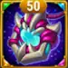
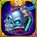
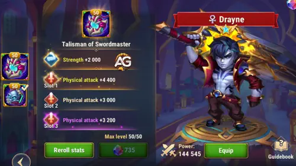
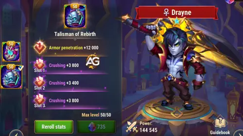

Guia do Drayne: O Contra de Ressurreição em Hero Wars Alliance
- Por: Alexandre Domingos. .
Cansado de ver Kayla e Aidan ressuscitarem aliados no momento decisivo? Conheça Drayne, o mestre da espada vindo de outro mundo que chegou para mudar o campo de batalha. Este feroz lutador de primeira linha não só causa dano devastador — ele garante que os inimigos que mata permaneçam mortos. Chega de revives frustrantes!
Drayne se une à facção Way of Eternity e traz uma habilidade que muda o jogo: ele aumenta o Crushing para si e para todos os aliados posicionados atrás dele. Isso significa que sua equipe causa mais dano contra inimigos abaixo de 50% de vida, transformando lutas apertadas em execuções garantidas.


📋 Índice do Guia do Drayne
Quem é Drayne em Hero Wars Alliance?
Drayne é um Fighter — um mestre da espada que dilacera inimigos com golpes giratórios, executa impiedosamente os feridos e apoia seus aliados. Sua capacidade de impedir ressuscitações o torna um counter essencial no meta atual.
- 🗡️ Classe (Glyph): Warrior
- 📍 Posição: Linha de Frente
- 💪 Stat Principal: Força
- ⚔️ Papel: Fighter
- 🏛️ Facção: Way of Eternity
- 💎 Como obter Soul Stones: Eventos Especiais
- 🤝 Melhores Sinergias: Corvus, Morrigan, Octavia, Dante, Tempus
- 🐉 Hydra Tier List: Ainda não definida
O diferencial de Drayne é o aumento de Crushing — um stat que aumenta TODO dano de saída (físico, mágico e puro) contra alvos com menos de 50% de vida. O bônus efetivo segue a fórmula: (Esmagamento ÷ (Esmagamento + stat principal do alvo)) × 100%. Atenção: o Esmagamento não se aplica à perda de vida causada por habilidades aliadas. Ele concede esse buff a si mesmo e aos aliados atrás dele, transformando a equipe em verdadeiros executores.
Importante: inimigos mortos por Drayne não podem ser ressuscitados. Isso o torna um forte counter contra heróis do meta como Kayla, Aidan, Rufus e Astaroth. Se você está sofrendo contra equipes com muitas ressuscitações, Drayne é a solução definitiva!
Drayne — Prós e Contras (Hero Wars Alliance)
✅ Prós
- Anti-ressurreição: Inimigos mortos por Drayne não podem ser ressuscitados, tornando-o um counter forte contra equipes com muitas ressuscitações como Kayla e Aidan.
- Buff de Crushing: Concede um poderoso aumento de Crushing para si e aliados atrás dele, aumentando todo o dano contra inimigos com pouca vida.
- Alto dano: Rising Tornado causa grande dano em área e aumenta seu alcance de ataque e Ataque Físico.
- Linha de frente resistente: Boas estatísticas para um lutador de linha de frente, com boa sinergia com Corvus, Octavia, Dante e Tempus.
- Especialista em execução: Excelente em finalizar inimigos feridos com suas habilidades e passiva.
❌ Contras
- Dependente de posicionamento: O buff de Crushing aplica-se apenas a aliados posicionados atrás dele, exigindo posicionamento cuidadoso da equipe.
- Consome energia: Habilidades como Rising Tornado exigem bom gerenciamento de energia para uso ideal.
- Dependente do meta: A eficácia pode variar contra composições sem ressuscitação; ainda não posicionado na Hydra Tier List.
- Focado em build: Requer priorizar Power Charge e Rising Tornado para obter o máximo impacto.
Drayne — Comparação de Stats Máximos dos Talismãs
| Stat |  Talisman of Swordmaster |
 Talisman of Rebirth |
|---|---|---|
 Inteligência Inteligência |
3.529 |
3.529 |
 Agilidade Agilidade |
4.178 |
4.178 |
 Força Força |
17.011 |
17.011 |
 Vida Vida |
1.553.285 |
1.473.285 |
 Ataque Físico Ataque Físico |
109.353 |
94.153 |
 Ataque Mágico Ataque Mágico |
25.338 |
25.338 |
 Armadura Armadura |
25.004 |
25.004 |
 Defesa Mágica Defesa Mágica |
10.885 |
10.885 |
 Resistência Resistência |
1.712 |
1.712 |
 Penetração de Armadura Penetração de Armadura |
38.006 |
50.006 |
 Esmagamento Esmagamento |
15.489 |
28.889 |
Guia de Talismãs do Drayne – Hero Wars Alliance
Escolher o talismã certo pode ser a diferença entre vitória e derrota. Ao contrário das skins — que sempre contribuem com o bônus de stat independente de qual você equipa — os talismãs só concedem seu bônus quando estão equipados ativamente. Drayne possui dois talismãs: Talisman of Swordmaster e Talisman of Rebirth. Saber qual usar e quando é fundamental para maximizar seu impacto em batalha.
Talisman of Swordmaster

O Talisman of Swordmaster é o melhor talismã geral do Drayne para a grande maioria das batalhas. Seu stat principal concede Força +2.000 — o stat primário do Drayne. Como Força é seu stat principal, cada ponto concede 40 pontos de Vida e 1 ponto extra de Ataque Físico, o que significa que esse único bônus entrega +80.000 de Vida e +2.000 de Ataque Físico.
Os três slots de reroll jogam Ataque Físico com até +4.400 cada. Considere os três slots como um único bônus combinado: +13.200 de Ataque Físico. Somado ao stat principal, esse talismã adiciona um total de +15.200 de Ataque Físico ao kit do Drayne — amplificando diretamente o buff de Crushing do Power Charge (50% Atq. Físico + 6.000), o dano do Rising Tornado e cada fórmula que escala com Ataque Físico.
Por que essa é a escolha recomendada? Todas as habilidades importantes do Drayne escalam com Ataque Físico ou Vida. O Swordmaster cobre ambos, fazendo toda a equipe causar mais dano enquanto o mantém vivo por mais tempo — essencial pois a Força Esmagadora (Relíquia nível 30) só se aplica enquanto ele está vivo.
Talisman of Swordmaster |
Stat Principal Total |
|---|---|
Força +2.000 |
+80.000 Vida & +2.000 Ataque Físico |
| Slot 1 | Slot 2 | Slot 3 | Bônus Total de Reroll |
|---|---|---|---|
Ataque Físico +4.400 |
Ataque Físico +4.400 |
Ataque Físico +4.400 |
Ataque Físico +13.200 |
Talisman of Rebirth

O Talisman of Rebirth segue uma abordagem diferente. Seu stat principal concede Penetração de Armadura +12.000 — um stat ofensivo fixo que permite que os ataques físicos do Drayne cortem a armadura inimiga com mais eficácia. É particularmente útil contra tanks com muita armadura.
Os três slots de reroll oferecem Esmagamento +4.400 por slot, totalizando +13.200 de Esmagamento. Esse bônus aumenta todo o dano de saída (físico, mágico e puro — mas não a perda de vida causada por habilidades aliadas) contra inimigos com menos de 50% de Vida, calculado como (Esmagamento ÷ (Esmagamento + stat principal do alvo)) × 100%. Com a Força Esmagadora ativa no Nível de Relíquia 30, esse Esmagamento se aplica permanentemente independente do HP inimigo — tornando-o uma adição significativa.
No entanto, equipar o Rebirth reduz o Ataque Físico de Drayne em aproximadamente 15.200 em comparação com o Swordmaster, o que diretamente reduz o buff de Esmagamento que o Power Charge concede a todos os aliados. Na maioria das situações, o benefício coletivo de um buff de Crushing mais forte do Swordmaster supera o Esmagamento pessoal e a Penetração de Armadura do Rebirth. Use este talismã especificamente quando enfrentar inimigos com muita armadura onde a Penetração de Armadura de 12.000 faz uma diferença decisiva.
Talisman of Rebirth |
Stat Principal Total |
|---|---|
Penetração de Armadura +12.000 |
+12.000 Penetração de Armadura |
| Slot 1 | Slot 2 | Slot 3 | Bônus Total de Reroll |
|---|---|---|---|
Esmagamento +4.400 |
Esmagamento +4.400 |
Esmagamento +4.400 |
Esmagamento +13.200 |
Dica do Alexandre: Em 90% das batalhas, equipe o Talisman of Swordmaster. A Força +2.000 (+80.000 de Vida, +2.000 de Ataque Físico) e o +13.200 de Ataque Físico dos rerolls amplificam diretamente todas as habilidades do Drayne, especialmente o buff de Esmagamento coletivo do Power Charge. Troque para o Talisman of Rebirth apenas ao enfrentar equipes com armadura extremamente alta onde a Penetração de Armadura de +12.000 faz a diferença decisiva — lembre-se apenas que isso vem com o custo de um buff de Esmagamento mais fraco do Power Charge, pois um Ataque Físico menor reduz a quantidade de Esmagamento concedida a todos os aliados.
Prioridade de Evolução das Habilidades Lendárias de Drayne – Hero Wars Alliance
Drayne recebeu poderosos aprimoramentos de Relíquia Lendária! Descubra a melhor ordem de evolução para todas as 6 habilidades — incluindo 2 novas habilidades lendárias — e domine o campo de batalha.
1ª Habilidade – Tornado Ascendente (Ultimate)
Não pode ser copiada! Drayne gira sua espada formando um tornado devastador, atingindo todos os inimigos à sua frente 3 vezes. Ao ativar, ele literalmente aumenta de tamanho e se torna uma presença aterrorizante no campo de batalha!
Por 9 segundos, ele recebe aumento de Ataque Físico e todas as suas habilidades ganham maior alcance. Pense nisso como Drayne entrando no "modo fera" — maior, mais forte e com mais alcance para punir qualquer um que tente manter distância.
Como o dano funciona: Cada um dos 3 golpes causa (150% Atq. Físico + 12.000) de dano. É um burst massivo quando totalmente evoluído!

Info da Animação / Fórmulas
- Dano físico por hit: (150% Atq. Físico + 12.000)
- Aumento de Ataque Físico: (20% Atq. Físico + 3.000)
- Aumento de tamanho e alcance: 20%
- Duração: 9 segundos
- Golpes: 3
- Palavras-chave: Dano Físico, Buff, Não pode ser copiada
Prioridade de Evolução: ALTA – Esta é a Suprema de Drayne! Evoluí-la aumenta tanto o dano quanto o buff de Ataque Físico que ele recebe. Quanto mais forte esta habilidade, mais letais TODAS as outras habilidades ficam durante os 9 segundos de empoderamento. Priorize após Carga de Poder.
Aprimoramento Lendário — Tornado Ascendente
Requisito: Nível de Relíquia 10
O Aprimoramento Lendário transforma Rising Tornado de um burst curto em uma potência prolongada! A duração do aumento de Ataque Físico e da expansão do raio das habilidades salta de 9 segundos para incríveis 30 segundos. Isso é mais que o triplo da duração original! Isso significa que Drayne permanece no seu "modo fera" empoderado pela maior parte das lutas, causando dano ampliado e alcançando mais longe com cada habilidade que usa.
- Duração Aprimorada: 30 segundos (antes era 9 segundos)
- Palavras-chave: Buff Lendário, Duração Estendida

2ª Habilidade – Golpe Esmagador
Aqui está uma habilidade que recompensa o jogo agressivo! A cada 3 ataques básicos, Drayne desfere um golpe poderoso que atinge todos os inimigos ao redor. A melhor parte? Este golpe conta como ataque básico também!
Por que isso é importante? Em Hero Wars, ataques básicos geram energia para o herói. Como Golpe Esmagador conta como ataque básico, Drayne essencialmente ganha energia mais rápido que a maioria dos heróis! Isso significa mais ativações de Suprema — e isso é uma vantagem enorme em lutas prolongadas.
Fórmula de dano: Cada Golpe Esmagador causa (200% Atq. Físico + 18.000) de dano a todos os inimigos próximos. É como um cleave automático embutido!

Info da Animação / Fórmulas
- Dano físico: (200% Atq. Físico + 18.000)
- Gatilho: A cada 3 ataques básicos
- Área: Todos os inimigos ao redor de Drayne
- Palavras-chave: Dano Físico, AoE, Conta como Ataque Básico
Prioridade de Evolução: MÉDIO-ALTA – Embora o escalamento de dano seja excelente, esta habilidade dispara automaticamente e o dano base já é sólido. Foque em Carga de Poder e Tornado Ascendente primeiro, depois invista aqui para aumentar o dano de cleave.
Aprimoramento Lendário — Golpe Esmagador
Requisito: Nível de Relíquia 20
O Aprimoramento Lendário adiciona um debuff poderoso ao Shatter Strike! Toda vez que Drayne ativa seu ataque de cleave, os inimigos atingidos terão seu atributo principal reduzido por 6 segundos. O que isso significa na prática? Heróis baseados em Força como Astaroth e Jhu perdem Vida e Ataque Físico. Heróis de Inteligência como Celeste e Faceless perdem Ataque Mágico. Heróis de Agilidade como Jhu perdem Ataque Físico e Armadura. Este debuff combina perfeitamente com Crushing — os inimigos ficam mais fracos E mais fáceis de executar!
- Redução de Estatística Principal: (10% Ataque Físico + 25)
- Debuff: Reduz o atributo principal dos inimigos atingidos
- Duração: 6 segundos
- Palavras-chave: Debuff Lendário, Redução de Atributo

Dica do Alexandre: Golpe Esmagador combina perfeitamente com as habilidades de Dante. O efeito de redução de atributo principal do Golpe Esmagador de Drayne cria um combo poderoso, tornando sua linha de frente muito mais eficaz contra tanks inimigos.
3ª Habilidade – Carga de Poder
Esta é a habilidade que define Drayne! 🔥 Ao ativar, Drayne avança, causa dano nos inimigos mais próximos e concede um poderoso buff de Crushing para si mesmo E para todos os aliados posicionados atrás dele!
O que é Crushing? É um atributo devastador que aumenta TODO o dano de saída (físico, mágico E dano puro) contra inimigos abaixo de 50% de vida. Imagine toda sua backline — magos, atiradores, suportes — todos causando dano bônus para finalizar inimigos feridos. Esse é o poder do Crushing!
Fórmula do buff: Drayne aumenta o Crushing em (50% Atq. Físico + 6.000) por 7 segundos. Enquanto isso, a investida causa (15% Vida Máx. + 24.000) de dano baseado na vida máxima de Drayne.

Info da Animação / Fórmulas
- Dano físico: (15% Vida Máx. + 24.000)
- Aumento de Crushing: (50% Atq. Físico + 6.000)
- Duração: 7 segundos
- Tipo de Buff: Drayne + Todos os aliados atrás dele
- Palavras-chave: Buff, Dano Físico, Suporte de Equipe
Prioridade de Evolução: MUITO ALTA – MAXIMIZE PRIMEIRO! Esta é a habilidade assinatura de Drayne e o motivo pelo qual você o quer no seu time. Um buff de Crushing mais alto significa que TODA sua equipe se torna mais letal na finalização de inimigos. O dano também escala com a Vida de Drayne, tornando-o mais tanque enquanto bate mais forte. Esta habilidade transforma bons times em esquadrões de execução!
4ª Habilidade – Veredicto Final (Passiva)
A arma definitiva contra ressurreição! ⚔️ Esta habilidade passiva é o que torna Drayne um pesadelo para equipes de ressuscitação. Quando os inimigos caem abaixo de um certo limiar de vida, os ataques e habilidades de Drayne os matam instantaneamente — sem discussão!
Mas espere, tem mais: inimigos mortos por Drayne NÃO PODEM ser ressuscitados! Adeus segunda vida do Astaroth, proteção divina do Rufus, correntes de revival da Kayla e truques de regeneração do Aidan. Uma vez que Drayne dá o Veredito Final, é realmente final.
Fórmula do limiar de execução: Inimigos são executados quando sua vida cai abaixo de (10% Vida Máx. + 24.000). Quanto maior a vida máxima de Drayne, mais cedo ele pode acionar execuções!

Info da Animação / Fórmulas
- Limiar de execução: (10% Vida Máx. + 24.000)
- Efeito especial: Inimigos mortos não podem ser ressuscitados
- Tipo: Passiva
- Palavras-chave: Execução, Anti-Ressurreição, Passiva
Prioridade de Evolução: ALTA – O limiar de execução escala com a Vida máxima de Drayne, que já aumenta naturalmente conforme você sobe de nível e investe em equipamento. Porém, o valor base de 24.000 cresce com a evolução da habilidade, fazendo execuções acontecerem mais cedo. Priorize após Power Charge para maximizar sua dominância anti-revive.
5ª Habilidade – Corrida de Batalha (Lendária)
Velocidade é a arma que ninguém vê chegando! 💨 Esta novíssima habilidade Lendária transforma Drayne em um guerreiro implacável que nunca para. A cada 15 segundos, Drayne entra em um estado de consciência de combate elevada, aumentando sua velocidade em 33% por 10 segundos.
Durante esse período, Drayne se move mais rápido pelo campo de batalha, ataca com mais frequência e usa suas habilidades mais vezes. Essa aceleração significa mais ataques básicos, o que aciona Shatter Strike mais cedo, o que gera energia mais rápido, o que leva a mais Rising Tornadoes. É uma reação em cadeia de destruição!
Pense da seguinte forma: imagine Drayne lutando em velocidade normal — ele já é aterrorizante. Agora imagine ele fazendo tudo 33% mais rápido. Mais ataques, mais cleaves, mais ativações de Suprema e mais execuções via Final Verdict. O boost de velocidade é essencialmente um multiplicador de dano para todo o seu kit.
Info da Animação / Fórmulas
- Aumento de velocidade: 33%
- Duração: 10 segundos
- Cooldown: 15 segundos
- Requisito: Nível de Relíquia 1
- Palavras-chave: Lendária, Buff de Velocidade, Passiva

Prioridade de Evolução: MÉDIO-ALTA – Esta habilidade Lendária desbloqueia automaticamente no Nível de Relíquia 1 e não requer evolução separada. Embora não escale com atributos diretamente, o boost consistente de 33% de velocidade amplifica significativamente todas as outras habilidades de Drayne indiretamente. Foque seus recursos de evolução nas 4 habilidades principais primeiro.
6ª Habilidade – Força Esmagadora (Lendária)
Isso muda TUDO! 🔥 Crushing Force é possivelmente a habilidade Lendária mais poderosa que Drayne traz para a mesa. Enquanto Drayne estiver vivo, o buff de Crushing do Power Charge sempre se aplica a ele e seus aliados — independentemente da vida do inimigo!
Por que isso é tão revolucionário? Normalmente, Crushing só aumenta o dano contra inimigos abaixo de 50% de HP. Com Crushing Force ativo, toda sua equipe causa esse dano bônus desde o primeiro segundo de batalha! Isso significa que magos, atiradores e suportes todos batem mais forte desde o início — não apenas quando os inimigos estão feridos. Transforma Crushing de um buff de "golpe final" em um amplificador de dano permanente.
Imagine sua equipe abrindo a luta com dano total de Crushing logo de cara. Tanks inimigos derretem mais rápido, heróis de mid-line nunca conseguem rampar, e healers não aguentam a saída de dano sustentada. Crushing Force remove a única limitação do kit de Drayne e transforma toda luta em equipe em uma certeza matemática.
Info da Animação / Fórmulas
- Efeito: Crushing sempre se aplica independentemente da vida do inimigo
- Condição: Enquanto Drayne estiver vivo
- Aplica-se a: Drayne + todos os aliados
- Requisito: Nível de Relíquia 30
- Palavras-chave: Lendária, Crushing, Passiva, Equipe inteira

Prioridade de Evolução: MUITO ALTA – Esta habilidade Lendária desbloqueia no Nível de Relíquia 30 e não requer evolução separada. Porém, alcançar Nível de Relíquia 30 deve ser uma prioridade máxima para qualquer jogador de Drayne! A aplicação permanente de Crushing muda fundamentalmente como sua equipe luta. Combinado com o buff de Crushing do Power Charge, isso torna o time de Drayne o esquadrão de execução mais perigoso do jogo inteiro.
📊 Resumo de Prioridade das Habilidades de Drayne
| Habilidade | Prioridade | Motivo |
|---|---|---|
| 3ª – Carga de Poder | MUITO ALTA | Habilidade central! Buff de Crushing para toda a equipe. |
| 6ª – Força Esmagadora ⭐ | MUITO ALTA | Lendária: Crushing sempre se aplica! Alcance Relíquia nv30 o mais rápido possível. |
| 1ª – Tornado Ascendente | ALTA | Burst de Suprema + auto-buff. Lendária: 30s de duração! |
| 4ª – Veredicto Final | ALTA | Passiva de execução + anti-ressurreição. |
| 5ª – Corrida de Batalha ⭐ | MÉDIO-ALTA | Lendária: 33% de boost de velocidade para ataques mais rápidos. |
| 2ª – Golpe Esmagador | MÉDIO-ALTA | Bom AoE + debuff Lendário de redução de atributo. |
Melhores Skins para Drayne em Hero Wars Alliance
As skins do Drayne aumentam stats-chave para o poder de execução. Priorize Força para máxima escalabilidade de Vida e sinergia com Ataque Físico nas habilidades.

Skin Padrão – Força
A Skin Padrão fornece Força +1.365, o que se traduz em ganhos massivos de atributos para o Drayne. Como Força é seu stat principal, cada ponto concede tanto Vida quanto Ataque Físico — os dois stats que impulsionam TODAS as habilidades do Drayne.
- Vida vinda da Força: +54.600 HP
- Ataque Físico vindo da Força: +1.365
Esta skin melhora diretamente o buff de Crushing do Power Charge (que escala com Ataque Físico), aumenta o limiar de execução do Final Verdict (que escala com Vida) e amplifica todas as habilidades de dano. É o pacote completo para o Drayne!
Prioridade de Evolução: MUITO ALTA – Maximize primeiro! Força tem efeito duplo em Vida (execução) e Ataque Físico (Crushing e dano).

Goddess Guardian Skin+ – Vida
A Goddess Guardian Skin+ fornece um enorme Vida +213.290. Este é o maior incremento de HP que o Drayne pode receber de uma única fonte, aumentando significativamente sua sobrevivência e aprimorando duas habilidades-chave que escalam com Vida máxima.
- Vida: +213.290 HP
Esse grande pool de vida amplifica o dano do Power Charge (15% Vida Máx. + 24.000) e eleva o limiar de execução do Final Verdict (10% Vida Máx. + 24.000), permitindo que o Drayne finalize inimigos mais cedo nas lutas. A maior sobrevivência também garante que ele fique vivo por mais tempo para aplicar múltiplos buffs de Crushing à equipe.
Prioridade de Evolução: MUITO ALTA – Priorize junto com a Skin Padrão! O forte escalamento em Vida beneficia diretamente as habilidades que dependem de HP.

Rebirth Skin – Perfuração de Armadura
A Rebirth Skin fornece Perfuração de Armadura +10.650. Esse stat ajuda o dano físico do Drayne a ignorar parte da armadura inimiga, tornando seus ataques mais eficazes contra front-lines resistentes como Astaroth, Aurora e Galahad.
- Perfuração de Armadura: +10.650
Embora útil para dano bruto, a Perfuração de Armadura não escala diretamente com as fórmulas principais do Drayne. É uma boa escolha terciária após maximizar Força e Vida.
Prioridade de Evolução: ALTA – Escolha terciária sólida após Skin Padrão e Goddess Guardian. Ajuda a cortar inimigos muito armadurados.

Oblivion Skin – Armadura
A Oblivion Skin fornece Armadura +10.650. Esse stat defensivo reduz o dano físico recebido, melhorando a sobrevivência do Drayne na linha de frente contra causadores de dano físico.
- Armadura: +10.650
Embora Armadura seja valiosa para resistência, não contribui para as capacidades ofensivas do Drayne nem escala com suas fórmulas de habilidade. É um investimento puramente defensivo para prolongar sua presença em combates longos.
Prioridade de Evolução: MÉDIA – Priorize depois das skins ofensivas (Padrão, Goddess Guardian e Rebirth). Útil contra equipes com alto dano físico.
Prioridade de Evolução dos Artefatos de Drayne em Hero Wars Alliance
Os artefatos definem o pico de poder do Drayne. Foque em stats que ampliem o Crushing e o limiar de execução para dominar lutas decisivas.


1º Artefato – Weapon of Valentar (Espada)
O artefato de arma concede Crushing +17.796. Quando Drayne usa sua Rising Tornado (Suprema), este artefato ativa um efeito bônus que concede stats extras para todo o time por 9 segundos.
- Crushing: +17.796
- Ativação: Junto com a habilidade suprema
- Duração do buff: 9 segundos
Esse artefato se soma ao buff de Crushing do Power Charge, tornando sua equipe extremamente perigosa contra inimigos com menos de 50% de vida. A sinergia com os 9 segundos da Rising Tornado é perfeita.
Prioridade de Evolução: MUITO ALTA – Crushing é a marca registrada do Drayne. O valor alto e o buff em área fazem deste um artefato essencial, lado a lado com o Anel de Força.

2º Artefato – Book of Chronicle of Epicness
O livro concede dois stats: Perfuração de Armadura +10.680 e Crushing +2.967. É um artefato híbrido, ajudando tanto no dano quanto na execução.
- Perfuração de Armadura: +10.680
- Crushing: +2.967
A perfuração melhora o dano de Drayne contra tanks com muita armadura, enquanto o Crushing extra aumenta um pouco mais o poder de finalização da equipe.
Prioridade de Evolução: ALTA – Ótimo investimento secundário. O bônus de Crushing é menor que o da arma, mas combinado com a Perfuração tem excelente custo-benefício.

3º Artefato – Ring of Strength
O anel concede Força +3.990. Como Força é o stat principal de Drayne, isso se converte em Vida e Ataque Físico em grande quantidade.
- Força: +3.990
- Vida vinda de Força: +159.600
- Ataque Físico vinda de Força: +3.990
Esse artefato aumenta a Vida (melhorando o limiar de execução do Final Verdict), o dano do Power Charge (que escala com Vida Máx.) e o Ataque Físico (que entra no cálculo do Crushing). É um dos artefatos mais eficientes do kit.
Prioridade de Evolução: MUITO ALTA – Invista nele junto com a arma. O ganho em Vida e Ataque Físico afeta todas as principais mecânicas do Drayne.
Prioridade de Evolução dos Glifos de Drayne
Os glifos fornecem grandes aumentos de stats no nível máximo. Foque em atributos que combinem com Crushing e com o estilo de execução do Drayne.
1º Glifo – Ataque Físico
Este glifo aumenta diretamente o dano de todas as skills físicas de Drayne, incluindo Rising Tornado, Shatter Strike e o buff de Crushing do Power Charge.
Stats no Nível 80: Ataque Físico +8.340
Prioridade de Evolução: MUITO ALTA – Ataque Físico entra na fórmula do buff de Crushing (50% Atq. Físico + 6.000) e em praticamente todo o dano do herói.
2º Glifo – Vida
Vida aumenta a sobrevivência do Drayne e impacta diretamente duas habilidades: o dano do Power Charge (15% Vida Máx. + 24.000) e o limiar de execução do Final Verdict (10% Vida Máx. + 24.000).
Stats no Nível 80: Vida +122.800
Prioridade de Evolução: ALTA – Mais Vida significa execuções mais cedo e Power Charge mais forte, além de deixá-lo vivo por mais tempo.
3º Glifo – Perfuração de Armadura
Permite que o dano físico de Drayne ignore parte da armadura dos inimigos, tornando-o mais perigoso contra tanks.
Stats no Nível 80: Perfuração de Armadura +12.850
Prioridade de Evolução: MÉDIO-ALTA – Útil contra front-lines muito defensivas, mas não entra diretamente nas fórmulas de skills como Crushing ou execução.
4º Glifo – Crushing
Crushing aumenta TODO dano de saída (físico, mágico e puro) que Drayne causa a inimigos com menos de 50% de vida. É o stat que define a identidade do herói.
Stats no Nível 80: Crushing +8.340
Prioridade de Evolução: MUITO ALTA – Este é o centro do kit do Drayne. Em conjunto com o buff de Crushing do Power Charge, transforma sua equipe em especialistas em finalização.
5º Glifo – Força
Por ser o stat principal do Drayne, Força fornece ao mesmo tempo Vida e Ataque Físico, tornando-se um investimento muito eficiente.
Stats no Nível 80: Força +2.110
- Vida vinda de Força: +84.400
- Ataque Físico vinda de Força: +2.110
Prioridade de Evolução: ALTA – Excelente custo-benefício; melhora tanto o dano (Ataque Físico) quanto a execução e o Power Charge (Vida Máx.).
📊 Resumo de Prioridade dos Glifos
| Glifo | Prioridade | Motivo |
|---|---|---|
| 4º – Crushing | MUITO ALTA | Stat central do herói, sinergia direta com Power Charge. |
| 1º – Ataque Físico | MUITO ALTA | Escala o buff de Crushing e todas as skills de dano. |
| 5º – Força | ALTA | Gera Vida e Ataque Físico ao mesmo tempo. |
| 2º – Vida | ALTA | Aumenta dano do Power Charge e o limiar de execução. |
| 3º – Perfuração de Armadura | MÉDIO-ALTA | Ajuda contra tanks, mas sem sinergia direta com fórmulas. |
Sinergia do Drayne em Hero Wars Alliance
As habilidades de Drayne criam sinergias poderosas com heróis específicos. Abaixo, exploraremos como suas habilidades interagem com outros em batalha, focando na composição de equipe e vantagens estratégicas.

Corvus reduz todas as defesas dos inimigos e aumenta o ataque físico e mágico de todos os aliados da Eternidade. O Power Charge de Drayne sinergiza perfeitamente, pois o buff de Crushing amplifica os ataques aumentados de Corvus, tornando toda a facção Eternidade devastadora contra inimigos com pouca vida.

Dante ataca aliados da linha de frente, reduzindo suas estatísticas de agilidade, força e inteligência. Drayne aumenta o poder de Dante com Power Charge, fornecendo um buff de Crushing, e também ataca a linha de frente, criando uma combinação devastadora que enfraquece inimigos enquanto aumenta o dano da equipe.

A habilidade Power Charge de Drayne sinergiza com o dano puro do Espelho de Octavia. POWER CHARGE: Drayne aumenta Crushing para si mesmo e todos os aliados atrás dele por 7 segundos, e ataca os inimigos mais próximos na frente dele. Esta configuração maximiza a saída de dano puro contra inimigos enfraquecidos.

Tempus Chronostasis: Diminuição de Armadura e Defesa Mágica: (13% Ataque Mág. + 1800). Para todos os inimigos. Por 2,5 segundos, eles não podem usar habilidades, mover-se ou desviar ataques, e sua Armadura e Defesa Mágica são reduzidas. Durante a duração desta habilidade, o cooldown de todas as habilidades inimigas que o têm será congelado. Esta habilidade aumenta a duração de todas as maldições e debuffs lançados nos inimigos. Enquanto Drayne usa Rising Tornado: RISING TORNADO: Gira sua espada e causa dano aos inimigos na frente dele 3 vezes. Quando ativado, Drayne cresce em tamanho e por 9 seg. aumenta seu Ataque Físico e o alcance de todas as suas habilidades. A combinação congela inimigos no lugar para os ataques de alcance estendido de Drayne.
(Drayne Best Teams)Melhores Times para Drayne em Hero Wars Alliance
- Octavia, Iris, Tempus, Dante, Drayne
- Aidan, Somna, Tempus, Yasmine, Drayne
- Fólio, Somna, Iris, Byrna, Drayne
- Octavia, Polaris, Dante, Byrna, Drayne
- Octavia, Iris, Dante, Drayne, Corvus
- Octavia, Iris, Morrigan, Drayne, Corvus
- Octavia, Heidi, Nebula, Drayne, Andvari
- Octavia, Heidi, Nebula, Drayne, Dante
- Aidan, Iris, Tempus, Drayne, Kayla
- Aidan, Guus, Drayne, Kayla, Julius
Melhores times do Drayne - sugestão de vídeo
Conclusão
Drayne é um finalizador de linha de frente que sobresai ao impedir ressuscitações e executar inimigos feridos. Priorize Power Charge, depois Rising Tornado, e combine-o com Corvus, Octavia, Dante ou Tempus para obter o máximo efeito.
Deixe sua opinião!
Gostou do nosso Guia do Drayne? Tem algo que ficou confuso ou quer sugerir melhorias? Participe da seção de comentários no Alexandre Games. Clique no botão para começar: